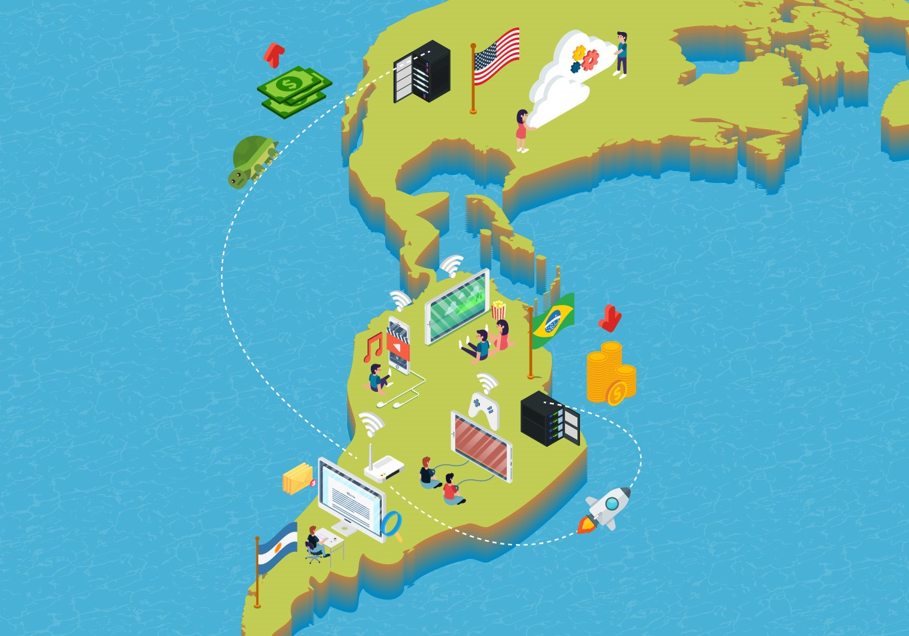

Las amenazas en Latinoamérica
Definitivamente, las áreas urbanas americanas han presenciado una explosión informática,
explosión a la cual las bibliotecas y los centros de documentación no han sido ajenos. Pero
fuera de los límites de las grandes urbes, poco ha cambiado. Las bibliotecas públicas y
comunitarias emplazadas fuera de las ciudades dan buena cuenta de este hecho.
Latinoamérica ha sido un continente secularmente atenazado por serias problemáticas. Ello
no significa que sea una tierra de continuas crisis: sencillamente, se trata de un conjunto de
países en donde existen situaciones complejas de difícil solución a corto plazo.
La brecha digital se agrega –con sus nuevos analfabetismos, con sus nuevas diferencias, con sus
nuevas escaseces- a una larga lista de desigualdades soportadas por los pueblos americanos.
Los resultados a largo plazo no difieren mucho de los que se alcanzarán en otras áreas del
mundo que comparten similares características: grupos humanos enteros se verán excluidos
del acceso a un universo digital en auge en el resto del mundo, a una información valiosa
para su crecimiento y progreso, y a una capacidad de comunicación y difusión de saberes
que permitiría el avance hacia sociedades verdaderamente multiculturales y democráticas.
